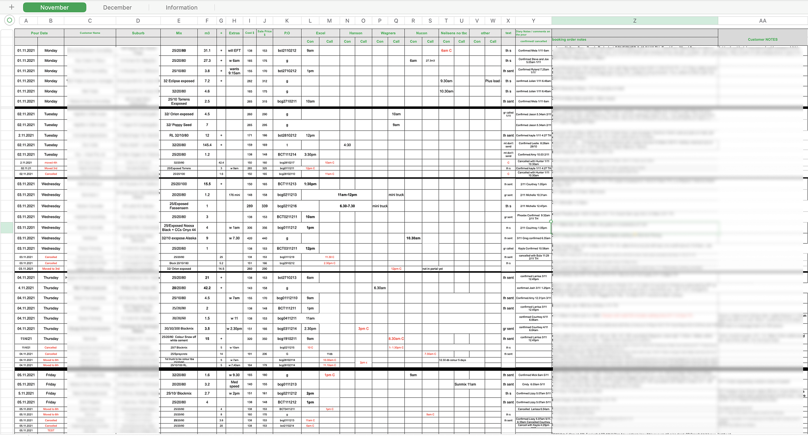
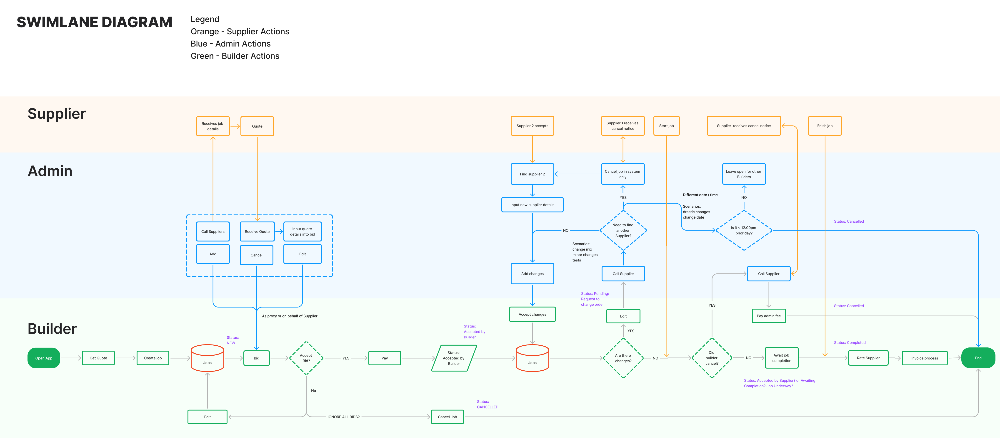
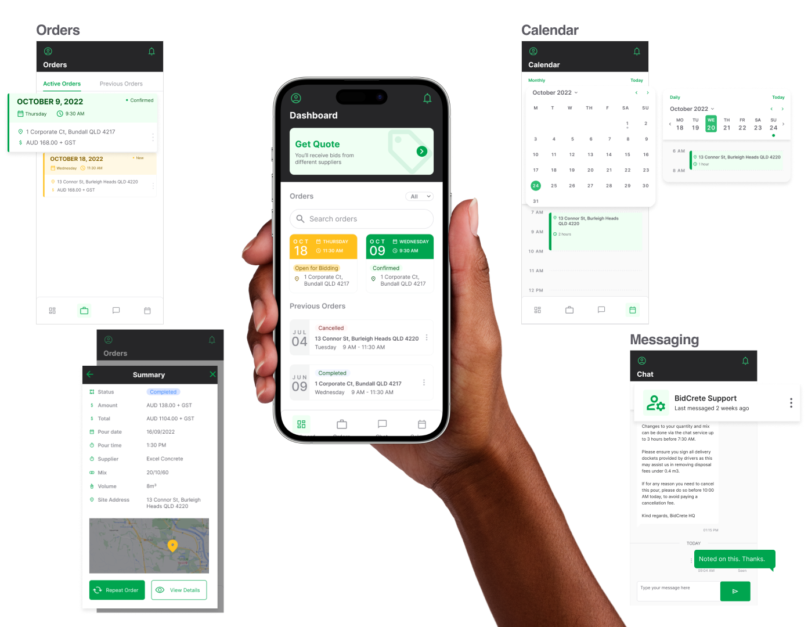
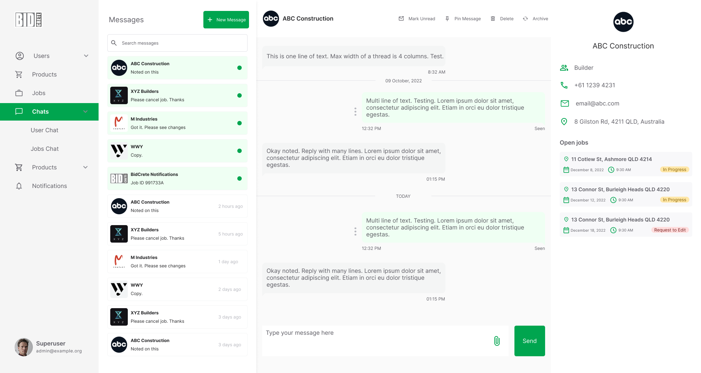

BidCrete
Visit onlineIndustry: Construction
Company Size: Medium B2B
Role: UI/UX Designer
Product Types: Admin Center, Builder’s Mobile App, Builder’s Web App
Introduction
BidCrete is a platform that enables builders to purchase ready-mix concrete from local suppliers. As the company expanded, inefficiencies emerged due to fragmented tools, manual workflows, and the time-sensitive nature of concrete delivery. My role was to redesign and build three products:
- Admin Center for internal operations
- Builder’s Mobile App for on-the-go ordering
- Builder’s Web App for full desktop functionality
We also ensured the foundation could scale to support future offerings like steel, aggregates, and sand.
The Challenge
Ordering concrete is uniquely time-sensitive: concrete is perishable and must be poured within a limited time after mixing. Yet, the industry often still relies on spreadsheets, phone calls, and siloed communication. BidCrete’s growth made these manual processes untenable.
Key problems included:
- ❌ Fragmented Data: Use of spreadsheets and disconnected tools created errors and confusion.
- ⛔ Manual Workflows: Admins were fielding phone calls, copy-pasting data, and manually coordinating orders.
- 📞 Poor Communication Flow: Builders on-site often lacked real-time updates, and order changes weren’t efficiently relayed to suppliers.
- 📦 No Order Flexibility or Prioritization: Changed or high-priority orders were getting lost, risking missed deliveries and revenue losses.
- 🕒 No Automation: Core processes—such as supplier bidding and builder updates—were completely manual.
 Legacy Excel Bible: BidCrete’s manual log of transactions, orders, and next steps before our team introduced a streamlined platform.
Understanding the Users
We conducted stakeholder interviews and field research with builders, admins, and suppliers. The insights shaped three primary personas:
🧑💼 Admin (Operations Team)
- Manages builder orders via an internal portal.
- Relays builder orders to suppliers manually via phone.
- Prone to human error due to copy-pasting between the app and spreadsheets.
- Needs a central dashboard, better order tracking, and status alerts.

👷 Builder (End-User)
- Orders concrete on-the-go, often while on-site under harsh conditions.
- Typically not tech-savvy—needs large buttons, simple navigation, and clear feedback.
- Needs real-time communication, order visibility, and timely notifications.
- Uses both mobile and desktop depending on role and context.

🏭 Supplier
- Receives order requests from admins, responds with quotes or availability.
- Needs timely updates if orders change.
- Relies on accurate data to plan batching and delivery logistics.

Goals
We broke the project into three core design goals:
✅ Replace spreadsheets with a centralized Admin Center
Create a robust dashboard and order tracking system to manage real-time changes and reduce manual work.
✅ Launch a Builder’s App (Mobile + Web)
Enable seamless concrete ordering, status updates, and communication while factoring in field constraints (visibility, usability, connectivity).
✅ Lay the groundwork for multi-material expansion
Design scalable components and flows to support future categories like steel and sand.
Design Strategy & Exploration
Admin Center
- Designed a data grid that mirrored admins’ “Excel Bible” layout, reducing learning curve.
- Introduced color-coded status tags:
- 🔴 Edited orders (requires supplier update)
- 🟡 Upcoming deliveries
- 🟢 New orders
- Implemented a priority flag system for urgent or updated orders.
- Embedded notification and messaging widgets for real-time coordination.
- Added geofencing filters to suggest nearby concrete plants.
Builder App (Mobile & Web)
- Prioritized a high-contrast, touch-friendly UI optimized for outdoor, field use.
- CTA: "Order Concrete" prominently displayed.
- Built a calendar feature to view upcoming deliveries, delivery addresses, and job site notes.
- Enabled messaging with admins for order clarifications.
- Integrated a notification system to prevent missed updates or schedule changes.
- Designed a modular structure for future expansion (e.g., ordering steel)
 A diagram our team used to visualize the workflows and status changes
With the budget restraints and limited supplier control, we focused on developing BidCrete for the builders and admins. Admins can liase with the supplier for now.
Iteration & Validation
- Swimlane diagrams were created to visualize workflows and handoffs between builders, admins, and suppliers.
- Frequent usability testing helped refine label clarity, button sizes, and visual hierarchy—especially for builders using the app in bright, noisy environments.
- Color choices and information layout were stress-tested for quick scanning and usability under construction site conditions.
- Design flows were structured and labeled ahead of sprints to keep developers unblocked.
The Outcome
 Enhanced Admin Dashboard: A modern table mirroring the legacy Excel columns, complete with status indicators and quick-action controls to streamline workflows and boost efficiency.
Enhanced Admin Dashboard: A modern table mirroring the legacy Excel columns, complete with status indicators and quick-action controls to streamline workflows and boost efficiency.
 The many features of the Builder's Mobile App
The transformation of BidCrete’s ecosystem drove clear operational and business results:
📊 Operational Efficiency
- Manual spreadsheet use dropped by 70%.
- Admins handled 40% more orders per week.
- Reduced miscommunication and delivery errors by introducing real-time messaging and alerts.
💵 Revenue Growth
- Launched new revenue streams via steel and pump truck subscriptions.
- Builder retention increased due to smoother workflows and faster order processing.
🧠 Future-Ready Infrastructure
- Platform now supports expansion into aggregates, sand, and steel.
- Admin backend is primed for automated invoicing, Xero integration, and machine learning insights.
Recognition: BidCrete was featured in The Australian Financial Review’s 2022 Fast Starters List, cementing its place as a leader in construction-tech innovation.
Learnings & Reflection
- ✅ Designing data-heavy UIs (tables, dashboards) taught me how to balance flexibility and usability.
- ✅ Field-driven personas made a massive difference in shaping the builder app.
- ✅ Being a solo designer required strong self-organization—designs were consistently delivered 2 sprints ahead of development.
- ✅ I improved how I annotate flows and components for better developer handoff.
- ✅ Next time, I’ll invest more time in documenting my design process to help scale design operations across a growing product.

- 